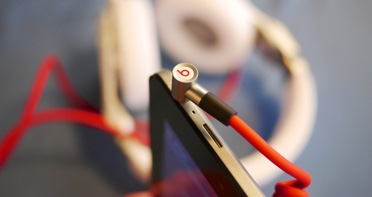

 27/3/2016
27/3/2016
 Evento, noticia.
Evento, noticia.
27/3/2016
Evento, noticia.
Abrimos talleres nuevos para reparar audio
Los usuarios de Obsocial lo han pedido a gritos, y si no lo han tenido antes quizá sea porque no los oíamos con altavoces rotos ;-)
Innauguramos un nuevo taller de reparación de audio en los dispositivos. Esperamos que os paséis por aquí y sigáis haciendo ruido para difundir el mensaje de activismo contra la obsolescencia programada.